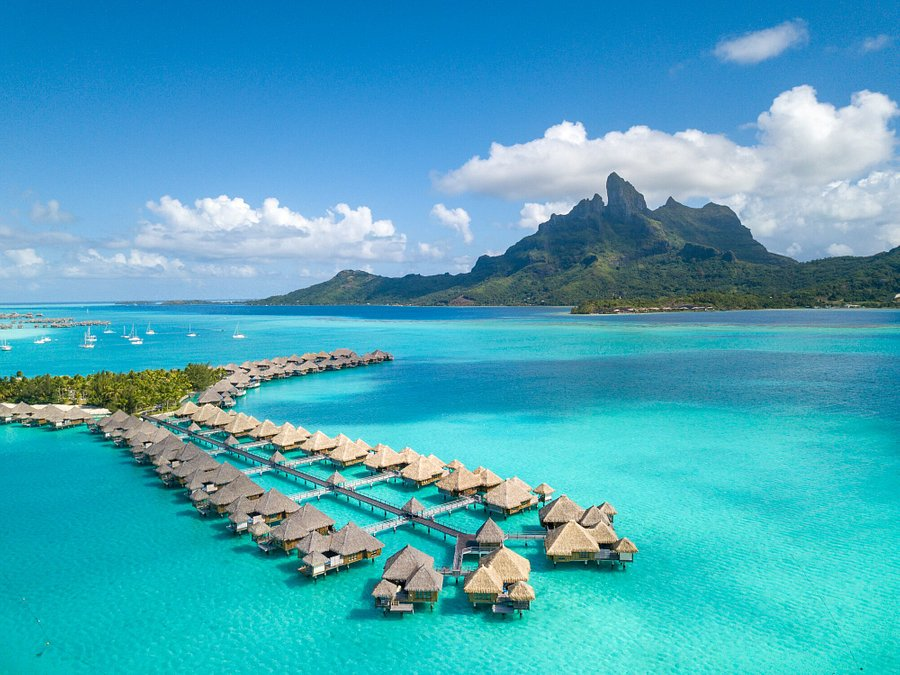

Paris, France

The magnetic City of Light draws visitors from around the globe who
come to see iconic attractions like the Eiffel Tower, the Louvre and
the Arc de Triomphe. But what travelers really fall in love with are
the city's quaint cafes, vibrant markets, trendy shopping districts
and unmistakable je ne sais quoi charm. Get lost wandering along
Paris' cobblestone streets, or grab a croissant and relax on the banks
of the Seine for hours. If you're up for a quick daytrip, head about
15 miles southwest of the city center to another must-see attraction:
the Palace of Versailles.
South Island, New Zealand

New Zealand's South Island brims with majestic landscapes at every
turn, from dramatic mountains to fjords to glaciers. Here, you can
admire the mountains of Fiordland National Park, a UNESCO World
Heritage Site, from hiking trails or a boat on Milford Sound. At
night, journey to the University of Canterbury's Mount John
Observatory to gaze at the starry skies. You can also indulge your
inner daredevil in Queenstown, explore two of the most accessible
glaciers in the world on the island's west coast or sample delicious
food and wine in the Marlborough region.
Bora Bora, French Polynesia

What this small French Polynesian island may lack in size it makes up
for in sheer tropical beauty. Here, you'll find picturesque beaches,
lush jungles and luxurious resorts. The island's dormant volcano,
Mount Otemanu, makes for a great photo-op or challenging hike, and the
friendly Bora Bora locals can help you catch a glimpse of the island's
best sights during an off-road excursion. To relax, head to Matira
Beach for crystal-clear water and soft sand. Although a trip to Bora
Bora is very expensive, most travelers say it's worth every penny.